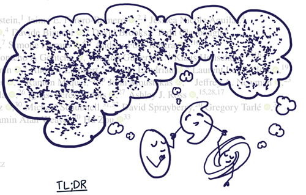
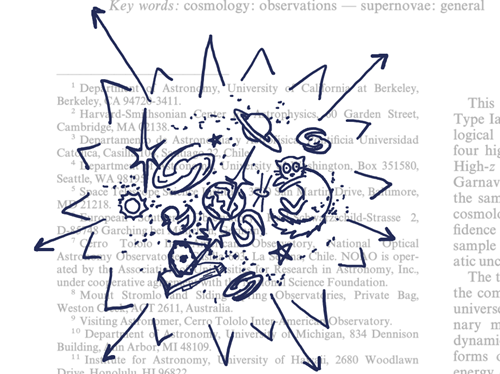
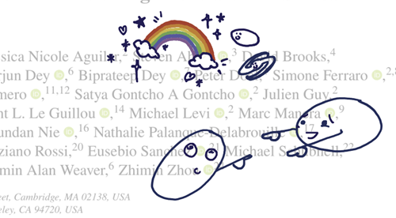
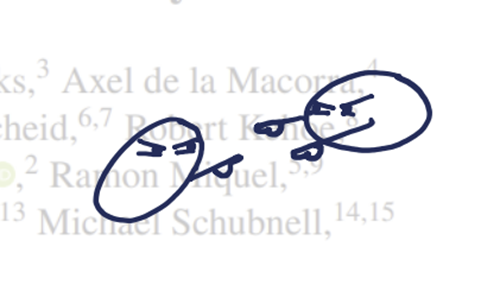

My full paper summaries
All summaries of my own papers can be found in the "Comments" section on arXiv, but are also linked directly here. Click here to see the summaries made by others.
Tiny groups of galaxies remember their cosmic origins
a.k.a Detection of the large-scale tidal field with galaxy multiplet alignment in the DESI Y1 spectroscopic survey (Lamman et al. 2024)Link to accessible paper summary | Link to original paper

Exploding stars tell us the universe is growing really fast
For Physics Todaya.k.a. Observational Evidence from Supernovae for an Accelerating Universe and a Cosmological Constant (Riess et al. 1998)
Link to accessible paper summary | Link to original paper

Galaxies point at each other and mess up measurements of the Universe. Now with rainbows!
a.k.a Redsfhift dependent RSD bias from IA with DESI Year 1 Spectra (Lamman et al. 2023)Link to accessible paper summary | Link to original paper

Galaxies point at each other and mess up measurements of the Universe.
a.k.a Intrinsic Alignment as an RSD Contaminant in the DESI Survey (Lamman et al. 2022)Link to accessible paper summary | Link to original paper